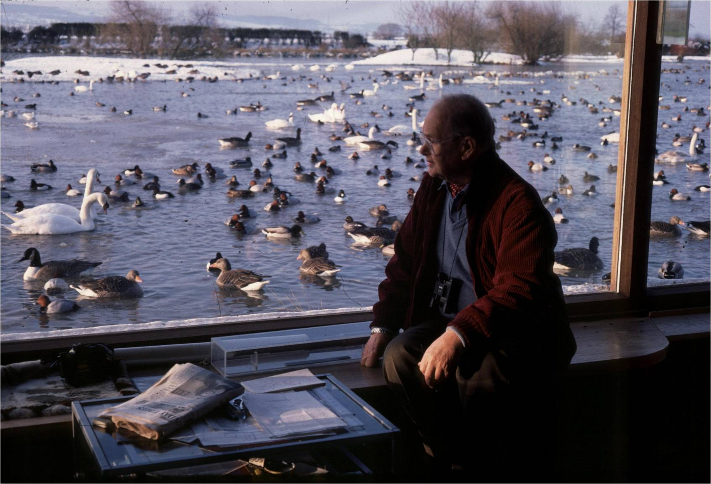

Sir Peter Markham Scott
The man who saved the NeNe Goose from extinction.

Sir Peter Scott looking out of lounge window at the wildfowl outside of his Slimbridge home near the Severn Estuary. The WWT is symbol of the commendible work of Sir Peter Scott as a British ornithologist, conservationist, and well noted for starting up the work of wildfowl and wetlands Trust in 1946. WWT History.